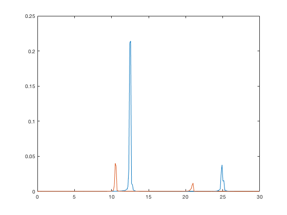

This is the readme for the C++ computer code associated with the paper:
Hutt et al. (2016) Dynamic Control of Synchronous Activity in Networks of Spiking Neurons PLOS ONE
These files were contributed by Jeremie Lefebvre.
Example use:
b=load('SS - PSD.txt');
figure
plot(b(:,1),b(:,2))
hold on; plot(b(:,1),b(:,3))
Which produces a figure

similar to figure 1 D in the paper.